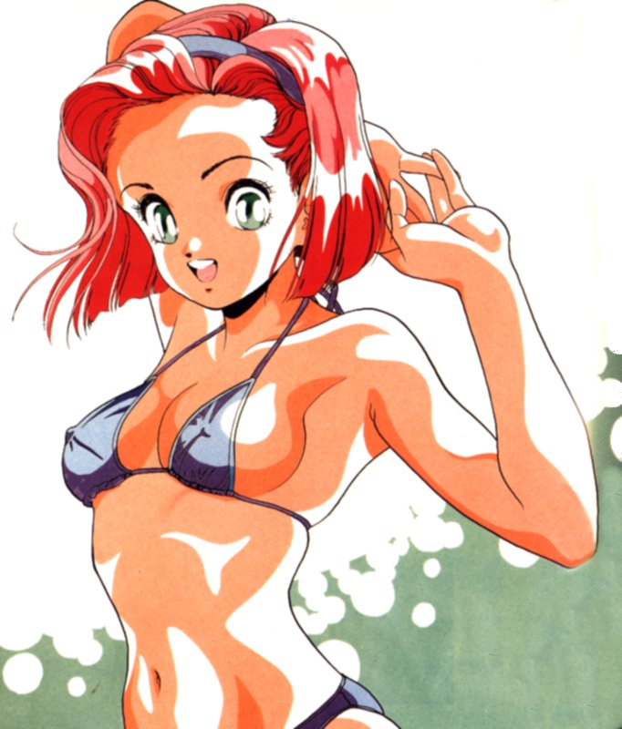

Ce petit jeu permet de savoir à quel personnage de manga vous ressemblez le plus. Il marche aussi bien pour les fille que pour les garçons.

1. Votre vie rêvée se passerait:
- dans un love hôtel.
- dans un temple au Japon.
- dans un pays imaginaire.
2. La devise qui vous ressemble le plus:
- vivre d’amour et de rêve.
- vivre de magie et d’espoir.
- vivre de passion et à 100 à l’heure.
3. On vous offre un cadeau. Qu’est-ce qui vous ferait le plus plaisir ?
- des tenues sexy (soit pour vous, soit pour votre conjoint(e).
- une panoplies de magiciens ou des formules magiques pour exaucer vos vœux.
- un roman de l’histoire sans fin dont vous êtes le héros.
4. Lorsque l’on vous blesse. Comment réagissez-vous ?
- vous laissez coulez. La violence gratuite, ce n’est pas votre truc.
- du tact au tact, vous rendez la pareille.
- vous faites comme si vous n’aviez rien entendu.
5. Votre technique pour draguer:
- de la timidité, un geste de tendresse et de l’humour.
- vous êtes direct et vous dites à la personne: “T’es libre, ce soir ?”.
- du naturel (y’a que cela de vrai !).
6. Ce qui vous fait craquer les autres chez vous:
- votre regard ténébreux et votre corps d’athlète.
- votre gentillesse.
- votre humour.
7. Ce que vous détestez chez les autres personnes:
- la méchanceté et l’hypocrisie.
- la violence gratuite et le non-respect
- la recherche du pouvoir sur les autres.
8. Si vous étiez un personnage vous aimeriez être:
- le roi Arthur / la reine des neiges.
- le Prince Charmant / La Belle au Bois Dormant
- Peter Pan / la fée Clochette.
9. Votre livre de chevet:
- les histoires vraies.
- Contes et Légendes / Le Seigneur des Anneaux.
- les romans policiers.
10. Comment voyez-vous la femme / l’homme idéal(e) ?
- beau / belle, fort(e) de caractère, qui soit toujours là pour vous.
- peu importe du moment qu’il / elle soit il / elle même.
- un peu rêveur, poète et romantique.
11. Vous voyez votre avenir:
- dans un lieu calme, près de la nature.
- dans une île, sous les cocotiers.
- un appartement bien meublé, en centre-ville.
12. Votre animal préféré:
- la panthère.
- le cheval.
- le chat.
13. Le métier que vous voudriez exercé si c’était possible:
- chanteur, mannequin.
- dessinateur, écrivain.
- policier, détective privé.
14. La cause pour laquelle vous voudriez le plus quelque chose:
- la protection de la faune et de la flore.
- la défense des droits de l’Homme.
- la misère dans le monde.
Comptage des points
Alors, si vous avez bien rempli les questions du numéro 1 au numéro 14, comptez le nombre de A, B et de C que vous avez obtenus et regardez à qui vous ressemblez.
| Question | Réponse 1 | Réponse 2 | Réponse 3 |
|---|---|---|---|
| 1 | A | B | C |
| 2 | C | B | A |
| 3 | A | A | B |
| 4 | B | A | C |
| 5 | C | A | B |
| 6 | A | B | C |
| 7 | B | C | A |
| 8 | A | C | B |
| 9 | C | B | A |
| 10 | A | B | C |
| 11 | B | C | A |
| 12 | A | C | B |
| 13 | C | B | A |
| 14 | B | A | C |
Résultats
Vous avez le plus de:
A, vous êtes Ryo Saeba (City Hunter) / Kanoë (X de Clamp)
Vous êtes sûr de vous, vous savez ce que vous voulez et vous faites tout pour l’obtenir. On a du mal à vous dominer lorsque vous voulez quelque chose. Vous aimez les plaisirs de la vie et profiter de chaque moment. Vous êtes pourtant quelqu’un de sensible, même si vous vous cachez sous une apparence froide parfois, pour ne pas que les autres personnes découvrent vos points faibles.
B, vous êtes Subaru (Tokyo Babylon) / Belldandy (Ah! My Goddess)
Vous êtes tendre et naturel. Vous ne cherchez pas à copier le modèle des autres, mais à restez vous-même. Vos amis sont précieux et ils peuvent compter sur vous lorsqu’ils en ont besoin. Vous êtes d’un tempérament généralement calme, mais lorsque l’on fait du mal au personnes que vous aimez, vous sortez vos griffes. Vous êtes attirés par tout ce qui est de l’ordre de l’esprit, de la sagesse orientale et de la méditation.
C, vous êtes Kyosuke (Kimagure Orange Road) / Miaka (Fuhigi Yugi)
Vous êtes rêveur, romantique et rechercher l’amour est important pour vous. Votre humour et votre gentillesse plaît aux gens. Vous êtes prêt à tout pour ceux que vous aimez. Le rêve est votre domaine et vous voudriez embellir la vie des autres personnes, un peu comme un magicien. Vous seriez capable de tout pour la personne que vous aimez.